2x2x2の先読み
ルービックキューブ関連 > 2x2x2の先読み
あるステップの実行前に、次のステップがどの状態になるのかを読む。 そのステップで使う手順に依存するので、私が使っている手順についてまとめておく。
目次
OLLでのPBL読み
下段はすでに揃えているので、OLLの実行後に上段がどの状態になるのかが分かれば良い。 完成と対角交換、隣接交換があり、隣接交換はバーのできる位置が4通りある。 それぞれの状態は次の通り。
完成状態は全ての側面が同色の組み合わせ、対角交換は全ての側面が対面色。 隣接交換は、同色と対面色、隣接色があり、同色と対面色が反対側にある。 任意の2側面の状態が分かれば、2側面とも同色か、2側面とも対面色か、それ以外かで、完成、対面交換、隣接交換のうちのどれなのかが分かる。 状態が分かった2側面が対面だと、隣接交換のバーの位置が分からない場合がある。 できれば隣接する2側面のOLL実行後の状態が分かることが望ましい。
各OLLがコーナーの位置をどのように変えるかを把握し、OLL実行後に同じ側面になるステッカーの実行前の位置を調べれば良い。
手順は「Ortega Method 解説 | Cube Voyage」より。
Sune
手順: R U R' U R U2' R'
コーナーは180度回転する。
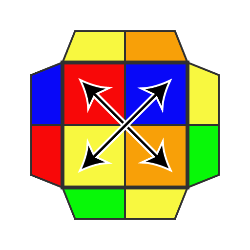
手順を回し終えた後にF面に来るステッカーと、R面に来るステッカーが見えているので、これらで判断できる。
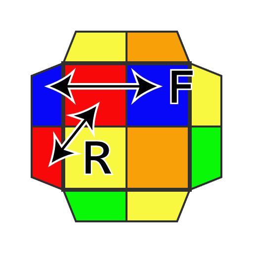
手順を回し終えた後に、完成状態、対角交換、各面にバーができる隣接交換になる状態は次の通り。
完成状態について、回し終えた後の状態は次のようになる。 以降のOLLも同様。
Anti-Sune
手順: R U2' R' U' R U' R'
コーナーは180度回転する。
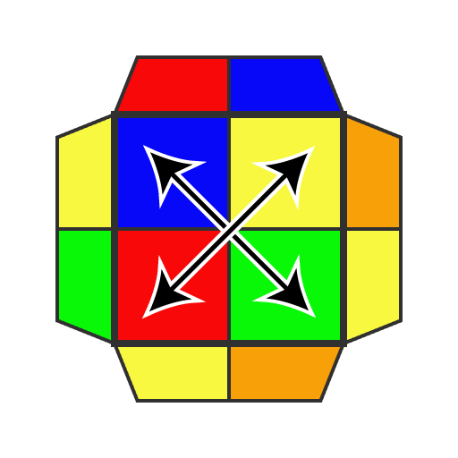
手順を回し終えた後にB面に来るステッカーと、L面に来るステッカーが見えているので、これらで判断できる。

T
手順: R U R' U' R' F R F'
コーナーは反時計回りに3点交換する。
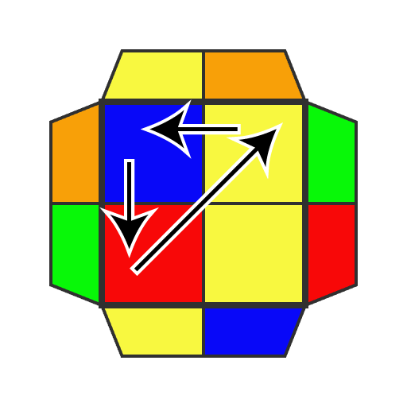
手順を回し終えた後にF面に来るステッカーと、R面に来るステッカーが見えているので、これらで判断できる。
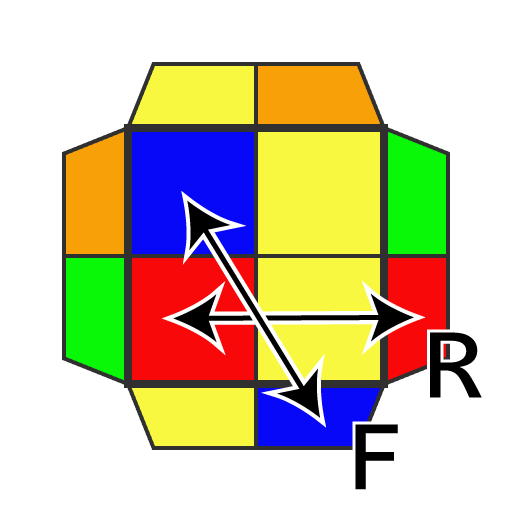
L
手順: F R' F' R U R U' R'
コーナーは時計回りに3点交換する。
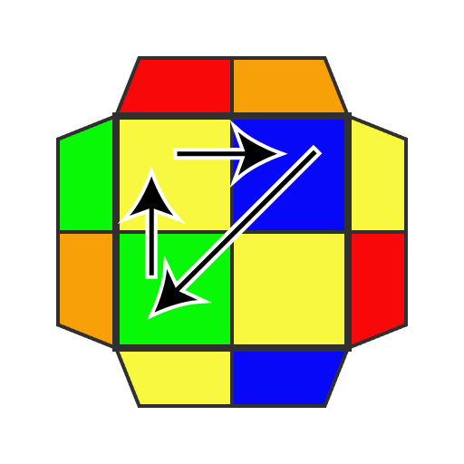
手順を回し終えた後にF面に来るステッカーと、B面に来るステッカーが見えているので、完成状態、対角交換、F面かB面にバーがある隣接交換は判断できる。 隣接交換のとき、U面にある側面色が同色ならバーはR面、対面色ならL面。
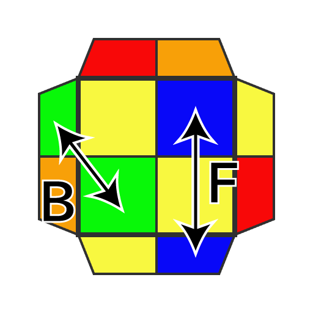
U
手順: F R U R' U' F'
コーナーは左右が入れ替わる。
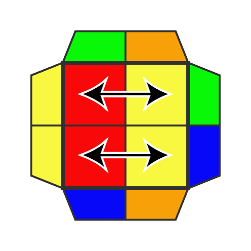
手順を回し終えた後にF面に来るステッカーと、R面に来るステッカーが見えているので、これらで判断できる。
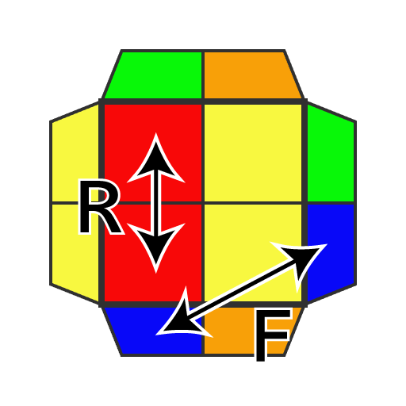
Pi
手順: F R U R' U' R U R' U' F'
コーナーの位置は変わらない。
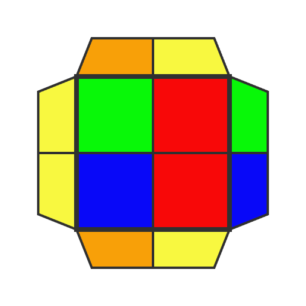
手順を回し終えた後にF面に来るステッカーと、R面に来るステッカーが見えているので、これらで判断できる。
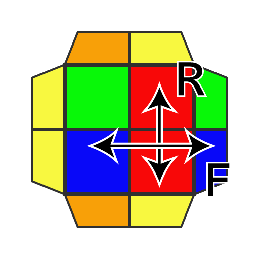
H
手順: R2 U2' R' U2 R2
コーナーは時計回りに回転する。
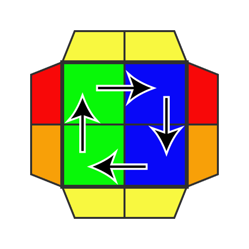
手順を回し終えた後にF面に来るステッカーと、R面に来るステッカーが見えているので、これらで判断できる。
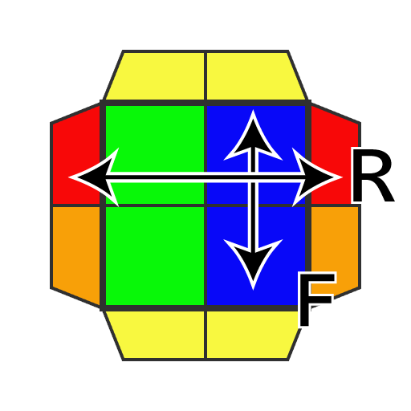
PBLでのAUF読み
AUFは、Adjust U Faceの略で、キューブ完成前の最後のU面の動き。 PBL後に見ればすぐに分かる情報ではあるけれど、事前に知っておくことで多少は速くなる。
手順は「2x2x2キューブの全て 10. 揃え方中級編STEP3 PBL - YouTube」より。
完成＋対角交換以外
手順:
- 完成＋隣接交換: （バーをUBに置いて）R' F R' F2 R U' R' F2 R2
- 対角交換＋対角交換: R2 B2 R2'
- 対角交換＋隣接交換: （バーをUFに置いて）R' F R' F2 R U' R
- 隣接交換＋隣接交換: （バーをDBとUBに置いて）R2 U' R2' U2' F2 U' R2
AUFは、PBL実行前のFLスロットのピースを揃える動きになる。 例えば、次の図の左の状態は、FLスロットのみに注目すると、図の右と同様に U で揃う形である。
ここから「対角交換＋隣接交換」の手順を回すと次の図の状態になる。 FLスロットのピースの組み合わせは変わっているが、U で揃う状態である。
完成＋対角交換
手順:
- 完成＋対角交換: R' F R' F2 R U' F R' F2 R U' R
手順を回すと、下段は変化せず、上段はLUFとRFUのステッカーがF面に来ることから、AUFを判断する。 例えば、次の図の左の状態はLUFステッカーが橙であり、手順を回すとこれが図の右のように正面に来るので、AUFは U になることが分かる。
@kusano_k